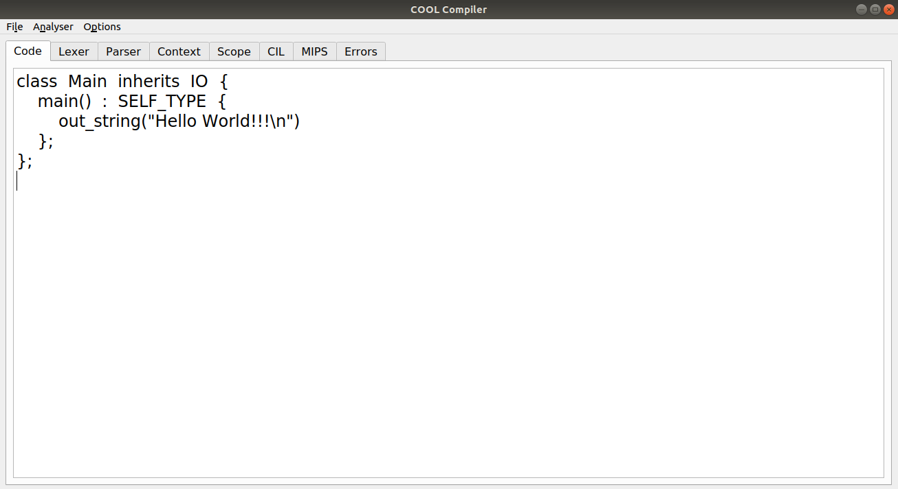

| Nombre(s) y Apellidos | Grupo | Correo | GitHub |
|---|---|---|---|
| Juan José López Martínez | C411 | j.lopez2@estudiantes.matcom.uh.cu | @Reinaldo14 |
| Juan Carlos Esquivel Lamis | C411 | j.esquivel@estudiantes.matcom.uh.cu | @jesquivel960729 |
| Ariel Plasencia Díaz | C412 | a.plasencia@estudiantes.matcom.uh.cu | @ArielXL |
La evaluación de la asignatura Complementos de Compilación, inscrita en el programa del 4to año de la Licenciatura en Ciencia de la Computación de la Facultad de Matemática y Computación de la Universidad de La Habana, consiste este curso en la implementación de un compilador completamente funcional para el lenguaje COOL.
COOL (Classroom Object-Oriented Language) es un pequeño lenguaje que puede ser implementado con un esfuerzo razonable en un semestre del curso. Aun así, COOL mantiene muchas de las características de los lenguajes de programación modernos, incluyendo orientación a objetos, tipado estático y manejo automático de memoria.
| No. | Etapas | Fecha de Entrega | Cumplimiento |
|---|---|---|---|
| 1 | Análisis Lexicográfico (lexing) | 23 de febrero del 2021 | ✔️ |
| 2 | Análisis Sintáctico (parsing) | 20 de marzo del 2021 | ✔️ |
| 3 | Análisis Semántico (semantics) | 7 de mayo del 2021 | ✔️ |
| 4 | Generación de Código (code_generation) | 10 de noviembre del 2021 | ❌ |
| 5 | Interfaz Visual | 1 de agosto del 2021 | ✔️ |
Para el uso del compilador es necesario tener python 3.7 o superior. Se hace uso de los paquetes ply para la generación del lexer y el parser, de pytest y pytest-ordering para la ejecución de los tests automáticos y de pyqt5 para el diseño de la interfaz gráfica. Todos los paquetes mencionados con anterioridad pueden ser instalados usando pip ejecutando
pip install -r requirements.txten la raíz del proyecto. El archivo principal es main.py, ubicado en la carpeta src, y recibe tanto argumentos posicionales como opcionales:
input_file: Argumento posicional que indica la ruta del fichero de entrada con el código COOL. Dicho archivo debe tener la extensión .cl.output_file: Argumento posicional que indica la ruta del fichero de salida en donde se guardará el código MIPS generado. Dicho archivo debe tener la extension .mips.debug: Argumento opcional booleano que especifica si queremos guardar los archivos intermedios de las fases transitadas por el compilador.help: Muestra una pequeña e importante documentación sobre estos comandos.También se puede ejecutar el compilador haciendo uso del archivo coolc.sh, ubicado también en src, que espera los dos primeros parámetros anteriormente mencionados. El fichero de MIPS generado por el compilador tendrá el mismo nombre que el fichero de entrada y será ubicado en la misma carpeta, pero se le añadirá la extensión .mips. Esperamos que este fichero pueda ser ejecutado por spim, el simulador de MIPS.
La interfaz visual fue llevada a cabo en pyqt5. Esta librería es un binding de la biblioteca gráfica Qt para el lenguaje de programación python. Está disponible para Windows, GNU/Linux y Mac OS X bajo diferentes licencias, por lo que nuestro proyecto con las dependencias requeridas puede ser ejecutado en los distintos sistemas operativos mencionados.

Escriba un programa valido en COOL. Por ejemplo:
xxxxxxxxxxclass Main inherits IO { main() : SELF_TYPE { out_string("Hello World!!!\n") };};Para comenzar el proceso de compilación, continúe con "Analyze/Run (F5)".
Se pueden cargar (Ctrl+O) los programas y guardar (Ctrl+S) los resultados alcanzados en diferentes formatos.
Podemos encontrar las opciones "Help (F1)", "Orientation", "Report" y "About authors (F6)".
Para el desarrollo del compilador se usó PLY, que es una implementación de python pura del constructor de compilación lex/yacc. Incluye soporte al parser LALR(1) así como herramientas para el análisis léxico de validación de entrada y para el reporte de errores. El proceso de compilación se desarrolla en tres fases:
En esta fase se procesa el programa fuente de izquierda a derecha y se agrupan en tokens o componentes léxicos que son secuencias de caracteres que tienen un significado. Todos los espacios en blanco, comentarios y demás información innecesaria se elimina del programa fuente. El lexer, por lo tanto, convierte una secuencia de caracteres (strings) en una secuencia de tokens. Después de determinar los caracteres especiales de COOL, especificados en su documentación, se deciden las propiedades necesarias para representar un token. Un token tiene un lexema, que no es más que el string que se hace corresponder al token y un tipo para agrupar los que tienen una característica similar. Este último puede ser igual o diferente al lexema: en las palabras reservadas sucede que su lexema es igual a su tipo, mientras que en los strings y en los números, estos son diferentes. Mientras que un token puede tener infinitos lexemas, los distintos tipos son predeterminados. Además, para el reporte de errores se guarda la fila y la columna de cada token.
La construcción del lexer se realiza mediante las herramientas de PLY. Para su construcción es necesario la definición de una variable tokens que es una lista con los distintos tipos de tokens. Después se especifican cuáles secuencias de caracteres le corresponderán a cada tipo de token, esto se especifica mediante expresiones regulares. Para cada tipo de token se definió una función mediante la convención de PLY de nombrar t_tipo, donde tipo es el tipo de token, y en el docstring la expresión regular que lo describe.
El análisis sintáctico o proceso de parsing consiste en analizar una secuencia de tokens y producir un árbol de derivación. Por lo tanto, se comprueba si lo obtenido en la fase anterior es sintácticamente correcto según la gramática del lenguaje.
El parser también se implementó mediante PLY, especificando la gramática y las acciones para cada producción. Para cada regla gramatical hay una función cuyo nombre empieza con p_. El docstring de la función contiene la forma de la producción, escrita en Extended Backus-Naur Form (EBNF). PLY usa los dos puntos (:) para separar la parte izquierda y la derecha de la producción gramatical. El símbolo del lado izquierdo de la primera función es considerado el símbolo inicial. El cuerpo de esa función contiene código que realiza la acción de esa producción. En cada producción se construye un nodo del árbol de sintaxis abstracta. El parámetro p de la función contiene los resultados de las acciones que se realizaron para parsear el lado derecho de la producción. Se puede indexar en p para acceder a estos resultados, empezando con p[1] para el primer símbolo de la parte derecha. Para especificar el resultado de la acción actual se accede a p[0]. Así, por ejemplo, en la producción
xxxxxxxxxxprogram : class_listconstruimos el nodo ProgramNode conteniendo la lista de clases obtenida en p[1] y asignamos ProgramNode a p[0].
xxxxxxxxxxdef p_program(self, p): ''' program : class_list ''' p[0] = ProgramNode(p[1])El procesador de parser de PLY procesa la gramática y genera un parser que usa el algoritmo de shift-reduce LALR(1), que es uno de los más usados en la actualidad. Aunque LALR(1) no puede manejar todas las gramáticas libres de contexto, la gramática de COOL usada fue refactorizada para ser procesada por LALR(1) sin errores. La gramática especificada en el manual de COOL fue reconstruida para eliminar cualquier ambigüedad y teniendo en cuenta la precedencia de los operadores presentes.
Para la construcción del árbol de derivación se definieron cada uno de los nodos. El objetivo de dicho árbol es describir la forma en que la cadena es generada por la gramática. Intuitivamente, esta información nos permite "entender", sin ambigüedad, el significado de la cadena. Además, se hizo uso de las herramientas de PLY para la recuperación de errores.
El objetivo del análisis semántico es validar que los predicados semánticos se cumplan. Para esto se construyen estructuras que permitan reunir y validar información sobre los tipos para la posterior fase de generación de código. El árbol de derivación es una estructura conveniente para ser explorada. Por lo tanto, el procedimiento para validar los predicados semánticos es recorrer cada nodo. La mayoría de las reglas semánticas nos hablan sobre las definiciones y uso de las variables y funciones, por lo que se hace necesario acceder a un "scope", donde están definidas las funciones y variables que se usan en dicho nodo. Además se usa un "contexto" para definir los distintos tipos que se construyen a lo largo del programa. En el mismo recorrido en que se valida las reglas semánticas se construyen estas estructuras auxiliares.
Para realizar los recorridos en el árbol de derivación se hace uso del patrón visitor. Este patrón nos permite abstraer el concepto de procesamiento de un nodo. Se crean distintas clases implementando este patrón, haciendo cada una de ellas una pasada en el árbol para implementar varias funciones.
En la primera pasada solamente recolectamos todos los tipos definidos. A este visitor, TypeCollector, solamente le interesan los nodos ProgramNode y ClassNode. Su tarea consiste en crear el contexto y definir en este contexto todos los tipos que se encuentren. Luego, en TypeBuilder se construye todo el contexto de métodos y atributos. En este caso nos interesan además los nodos FuncDeclarationNode y AttrDeclarationNode. En el tercer recorrido se define el visitor VarCollector en el que se procede a la construcción de los scopes recolectando las variables definidas en el programa, teniendo en cuenta la visibilidad de cada uno de ellos. Requieren especial atención los atributos, cuya inicialización no puede depender un atributo que esté definido posteriormente a él; esto se logra llevando un índice de los atributos que han sido definidos hasta el momento y buscando en el scope los atributos a partir de dicho índice. Un problema similar ocurre con las expresiones let y case, para las cuales un nuevo scope es creado para que las variables definidas dentro de dichas expresiones sean solamente visibles dentro de dicho scope. Por último, en TypeChecker se verifica la consistencia de tipos en todos los nodos del AST. Con el objetivo de detectar la mayor cantidad de errores, en cada corrida se toman acciones de cómo definir ErrorType para expresar un tipo que presentó algún error semántico.
Con el objetivo de generar código COOL de forma más sencilla se genera además un código intermedio, CIL, ya que el salto directamente desde COOL a MIPS es demasiado complejo.
En el proceso de tokenización de una cadena dos de los elementos más complicados resultan ser los comentarios y los strings. Para su procesamiento se definieron dos nuevos estados:
xxxxxxxxxxCOMMENTS : exclusiveSTRINGS : exclusivePor definición la librería PLY contiene el estado initial , donde se agrupan todas las reglas y tokens definidas para el procesamiento normal. En la definición de un nuevo estado, se definen nuevas reglas para el procesamiento especializado, es decir, que ciertos tokens dentro de estos estados pueden ser analizados de manera diferente a que si estuvieran en el estado initial. De esta manera cuando se entra en en uno de los estados, todas las reglas que no correspondan al mismo son ignoradas.
–): Como es toda la línea no es necesario entrar en un estado para procesarlo, con una expresión regular pudimos darle solución.* ... *): Con el primer * entramos en el estado de COMMENTS, así asumimos que a partir de ese momento todo es un comentario hasta que aparezca el próximo *. No necesariamente regresamos al estado inicial donde las reglas que no son de comentarios no son ignoradas, sino que se tiene un control estricto de qué comentario está cerrando dicho símbolo. Para esto se mantienen unos paréntesis balanceados con los inicios y finales de los comentarios y solo se regresa al estado inicial si el balance es igual a 0.En cuanto se analiza el carácter " desde el estado inicial del parser, se pasa al estado STRINGS, donde definimos un conjunto de reglas especializadas para tokenizar de manera correcta el string. Entre dichas reglas se pueden destacar las siguientes:
t_STRINGS_newline: Encargada de analizar \n, carácter muy importante en los strings que representa el cambio de línea.t_STRINGS_end: Procesa el " dentro del estado string. Por defición si aparece dicho carácter en este estado significaría el fin del string en cuestión, a no ser esté antecedido por el carácter \, en cuyo caso, se considera como parte del string.